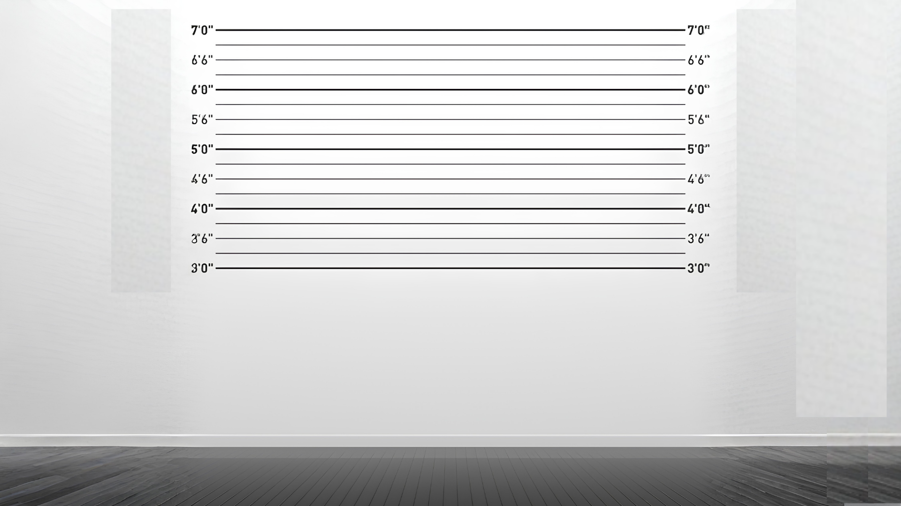
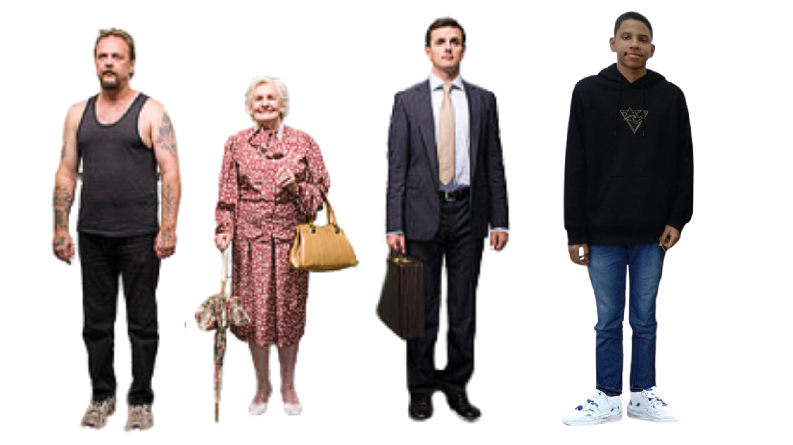
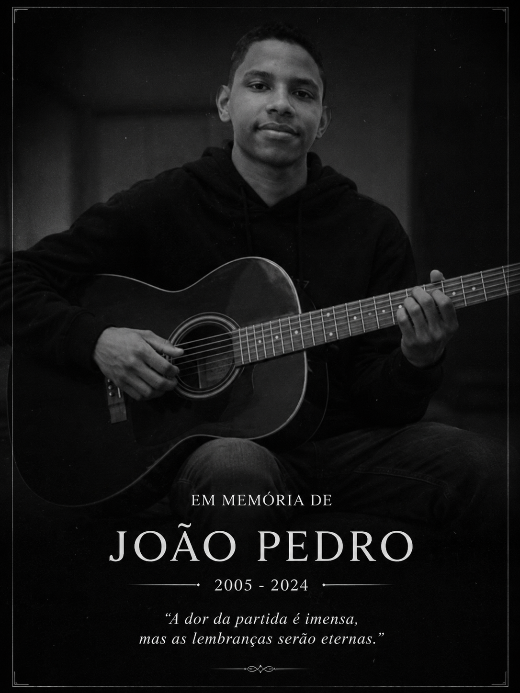

Sala de Reconhecimento — Divisão de Homicídios
Uma vítima. Quatro suspeitos. Todos falam inglês no Simple Present.
Como vencer: apenas um dos suspeitos usa o Simple Present errado.
Escute as respostas com atenção, encontre os erros de gramática
(verbo sem o -s na 3ª pessoa, don't no lugar de doesn't...)
e acuse quem está mentindo — porque quem erra a gramática é o assassino.
Dica: leia devagar. O erro está nas palavras.


Selecione o suspeito que você acredita ser o culpado. Você só terá uma chance.
